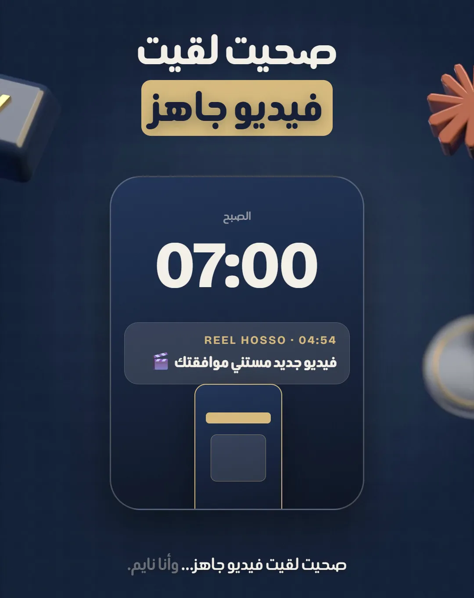
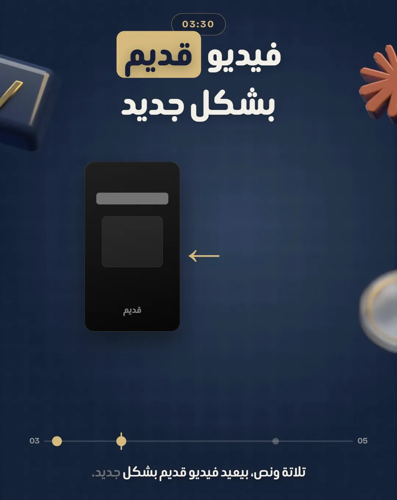
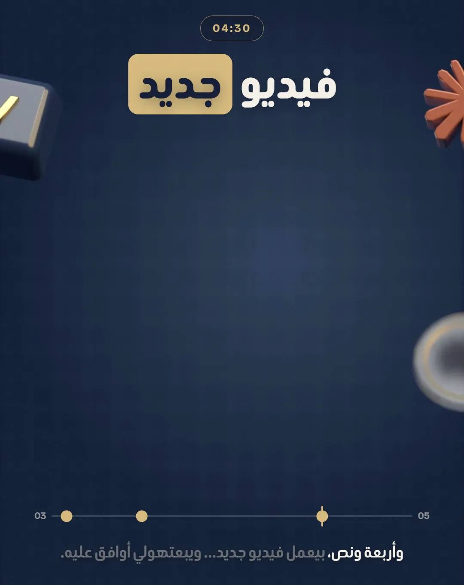
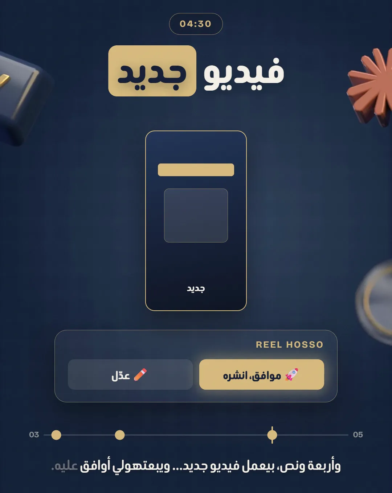

صحيت لقيــتفيديو جاهـــز
3 مهام متجدولة في Claude بتشتغل كل ليلة وأنا نايم: الساعة 3 بيصلّح غلطة في الاستوديو، 3 ونص بيعيد فيديو قديم بشكل جديد، و4 ونص بيعمل فيديو جديد ويبعتهولي أوافق عليه. ومفيش حاجة بتتنشر غير لما أدوس «موافق» بنفسي. دي الطريقة.


- 01
المطلوب قبل ما تبدأ
اشتراك Claude مدفوع، وClaude Desktop (أو Claude Code) على جهازك، وفولدر فيه شغلك: الفيديوهات القديمة والأدوات اللي بتعمل بيها. والجهاز لازم يفضل شغال بالليل: المهمة المتجدولة بتشتغل على جهازك، مش على الإنترنت.

مثال من الريل: الساعة 7 الصبح والفيديو مستني موافقتي - 02
3:00 · يصلّح غلطة
أول مهمة: Claude يقرا ملاحظات اليوم (إيه اللي ما اشتغلش، إيه اللي اتعلّق عليه) ويصلّح حاجة واحدة بس في طريقة الشغل. حاجة واحدة كل ليلة أأمن من عشرة.
اقرا ملف الملاحظات بتاع النهارده، واختار أهم غلطة واحدة اتكررت، وصلّحها في أدوات الشغل. جرّب التصليح على مثال صغير قبل ما تعتمده. اكتبلي في سطرين: صلّحت إيه، وإزاي أرجّعه لو مش عاجبني.
الساعة 3:05: غلطة في المونتاج اتصلّحت - 03
3:30 · فيديو قديم بشكل جديد
تاني مهمة: يختار فيديو قديم أداؤه كان ضعيف، ويعمله تاني بشكل جديد (بداية أقوى، إيقاع أسرع، تصميم أحسن). الفكرة موجودة والشغل معمول، هو بس بيدّيها فرصة تانية.
اختار فيديو من الأسبوعين اللي فاتوا أداؤه أضعف من الباقي. اعمله نسخة جديدة: أول 3 ثواني أقوى، وقص الحشو، ونفس الكلام الحقيقي. حطه في فولدر «للمراجعة» وما تنشرش حاجة.
الساعة 3:30: فيديو قديم بيتعمل من جديد - 04
4:30 · فيديو جديد ومستني موافقتك
تالت مهمة: يعمل فيديو جديد من أفكار جاهزة عندك، ويبعتهولك (أنا بستقبله على تيليجرام) بزرارين: «موافق» و«عدّل». لما تصحى تتفرج وتقرر. ومفيش حاجة بتتنشر غير لما تدوس موافق بنفسك.

الساعة 4:30: فيديو جديد، وزرار الموافقة في إيدي أنا
نصايح صغيرة
- ابدأ بمهمة واحدة بس، ولما تطمّن زوّد التانية.
- سيب بين كل مهمة والتانية نص ساعة على الأقل عشان ما يزحموش بعض.
- المهام دي بتاكل من حد الاستخدام بتاع باقتك، فالليل وقت كويس ليها لأنك مش بتستخدم Claude ساعتها.
- النشر دايمًا بموافقتك: ما تخليش أي مهمة تنشر لوحدها.
عايز حد يعملهولك؟
مش فاضي تتعلم وتعمل بنفسك؟ أنا بعمل ريلز لبراندك بنفس الطريقة اللي بشرحها هنا.